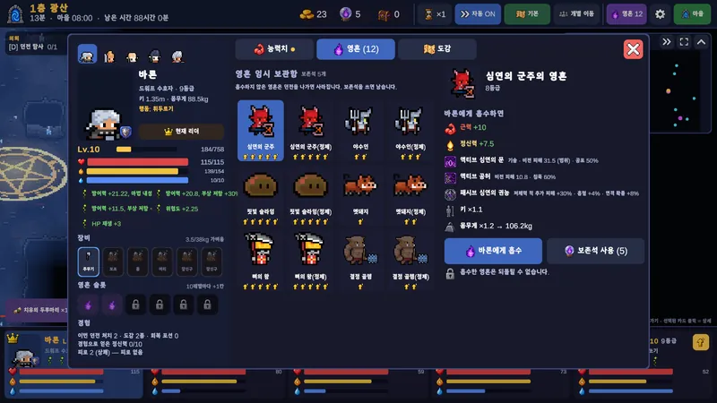
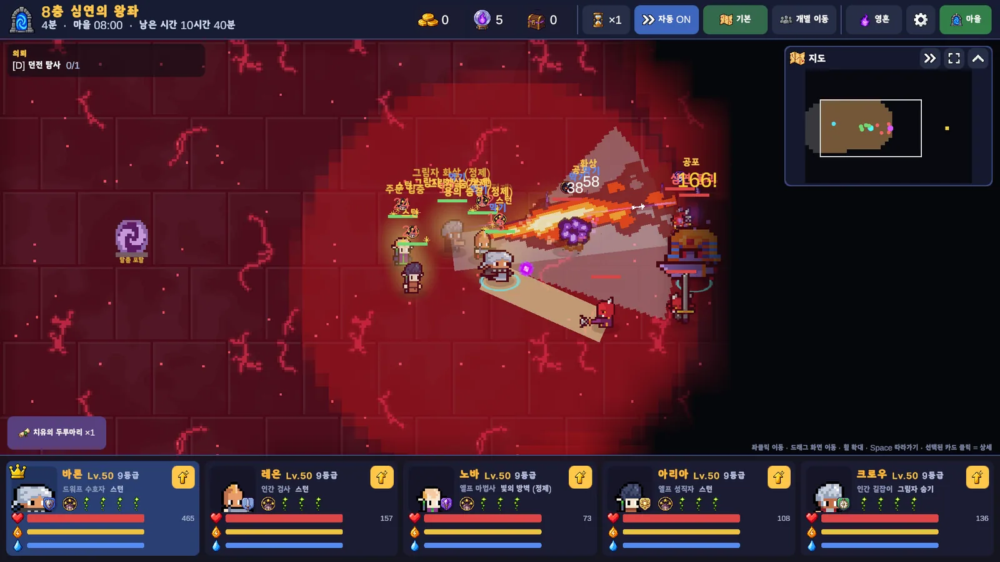
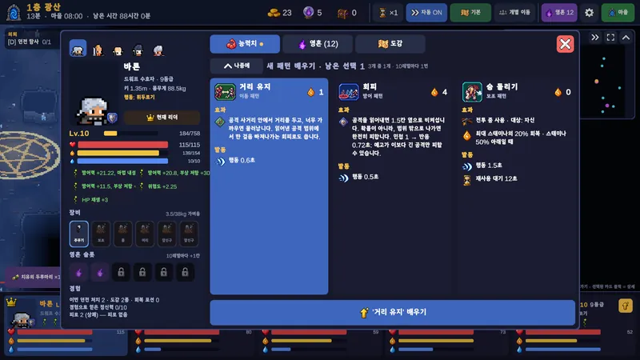
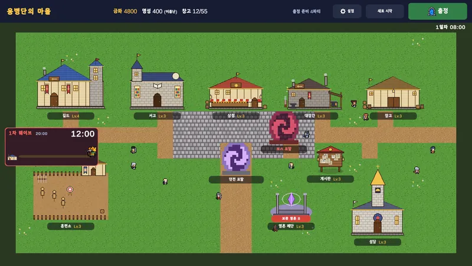

영혼으로 빚는 용병
몬스터의 영혼을 흡수시켜 용병에게 새 능력을 부여하고, 아껴 둘 영혼은 보존해 둡니다. 레벨이 오를수록 담을 수 있는 영혼 슬롯이 늘어납니다.

영혼을 흡수하는 용병단
PROJECT 005
가제 · Working Title
어떤 영혼을 주느냐가 어떻게 싸우는지를 정한다.
영혼을 흡수하는 용병단은 용병단을 운영하며 던전을 탐험하는 2D RPG입니다. 몬스터에게서 얻은 영혼을 용병에게 흡수시키면 능력치와 행동 패턴, 액티브·패시브 스킬이 더해집니다. 같은 검사라도 어떤 영혼을 품었느냐에 따라 전혀 다른 역할을 맡게 됩니다.
플레이어는 용병을 고용하고 파티를 편성해 원정을 보냅니다. 용병들은 스스로 던전을 탐사하고 싸우며, 필요할 때는 직접 이동을 지시할 수 있습니다. 원정에서 얻은 자원을 길드·대장간·훈련장·서고 같은 마을 시설에 투자하며 다음 원정을 준비하세요.
실제 게임 화면으로 촬영했습니다. 현재 주요 시스템과 플레이 흐름을 구현한 개발 중 버전입니다. 화면과 수치는 출시 전까지 바뀔 수 있습니다.

몬스터의 영혼을 흡수시켜 용병에게 새 능력을 부여하고, 아껴 둘 영혼은 보존해 둡니다. 레벨이 오를수록 담을 수 있는 영혼 슬롯이 늘어납니다.

공격·방어·이동·조우 패턴이 용병의 싸움 방식을 정합니다. 베기, 막기, 측면 이동, 도발까지 조합해 파티의 역할을 나눕니다.

전장의 안개에 가려진 던전을 파티가 알아서 탐사하고, 수호자를 쓰러뜨려 출구를 엽니다. 원할 때는 직접 이동을 지시할 수 있습니다.

길드·대장간·훈련장·서고·영혼 제단 등 마을 시설을 키우며 더 깊은 층을 향한 다음 원정을 준비합니다.